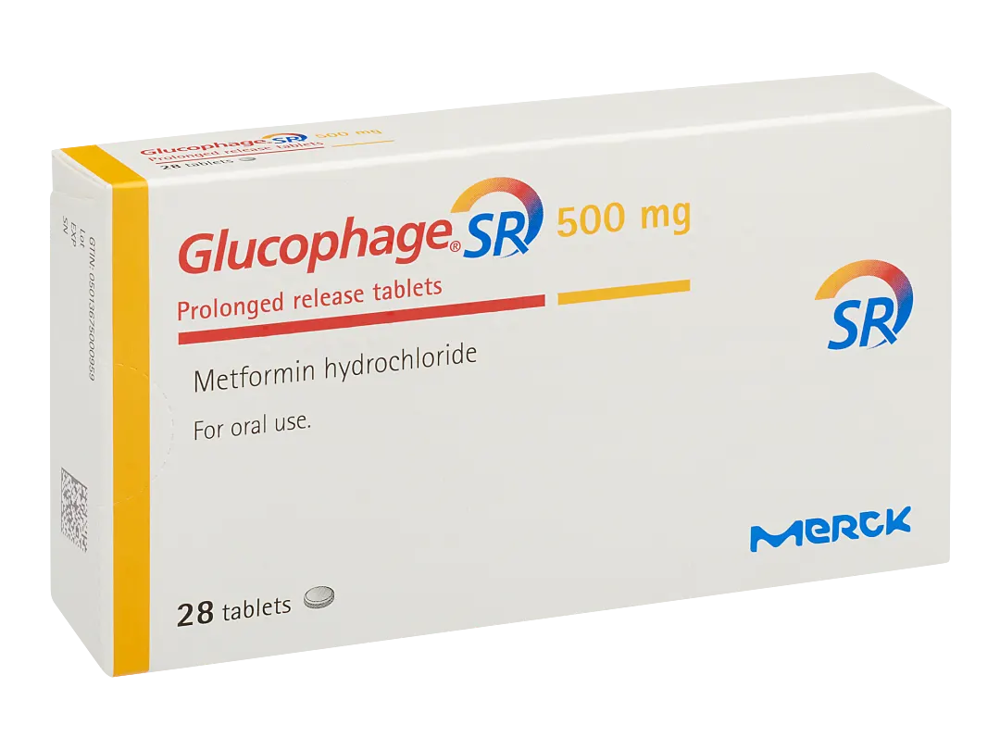
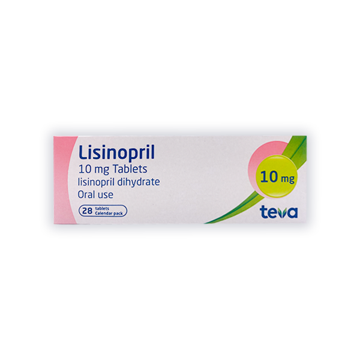
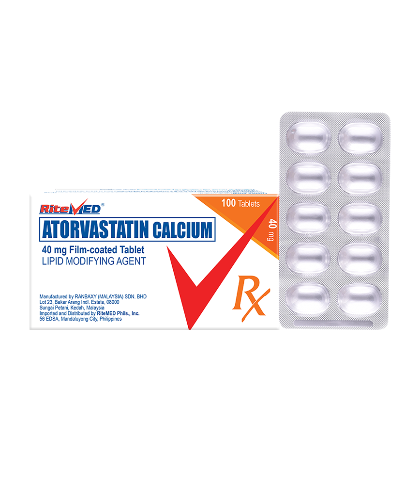
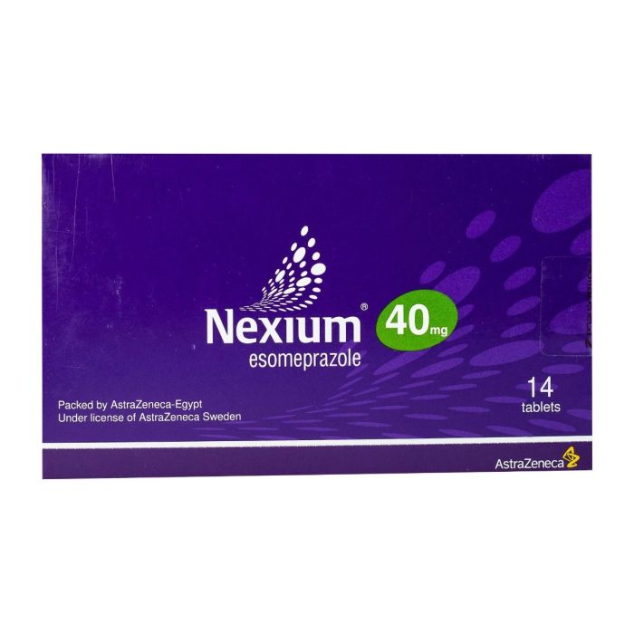
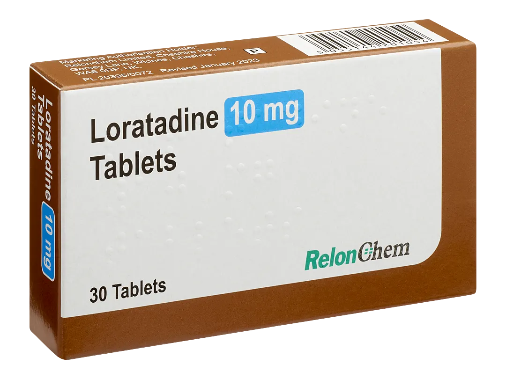
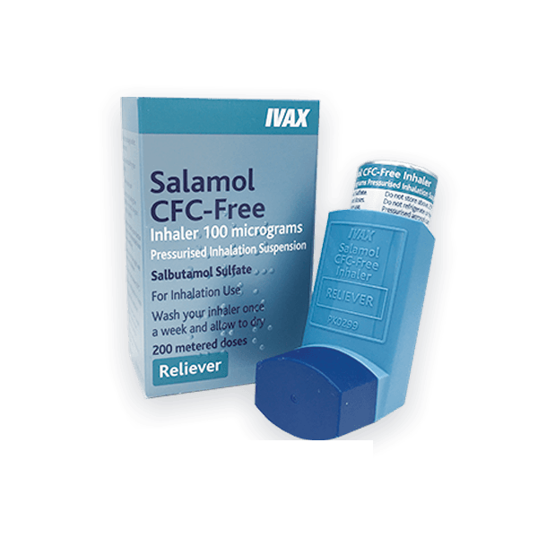

Product Details
Paracetamol

Description: Paracetamol is used to relieve pain and reduce fever.
Side Effects: May include nausea, headache, or dizziness in rare cases.
Price
Back to TopMetformin
Description: treat high blood sugar levels that are caused by a type of diabetes mellitus or sugar diabetes called type 2 diabetes.
Side Effects: May include Abdominal or stomach discomfort.
Price: 3.5 OMR
Back to TopLevothyroxine Sodium

Description: Vitamin C boosts your immune system and helps fight infections. The thyroid gland makes thyroid hormones which help to control energy levels and growth. Levothyroxine is taken to replace the missing thyroid hormone thyroxine.
Side Effects: Feeling sick (nausea) Stick to simple meals and do not eat rich or spicy food.
Price: 1.6
Back to TopLisinopril
Description:Lisinopril works by blocking a substance in the body that causes the blood vessels to tighten. As a result, lisinopril relaxes the blood vessels.
Side Effects: Feeling dizzy or lightheaded, especially when you stand up or sit up quickly.
Price: 2.8
Back to TopAtorvastatin
Description:Atorvastatin belongs to the group of medicines called HMG-CoA reductase inhibitors, or statins. It works by blocking an enzyme that is needed by the body to make cholesterol, and this reduces the amount of cholesterol in the blood.
Side Effects: Headaches. Make sure you rest and drink plenty of fluids.
Price: 4
Back to Topesomeprazole
Description:Esomeprazole is a proton pump inhibitor (PPI). It works by decreasing the amount of acid that is produced by the stomach.
Side Effects: headache, diarrhoea and stomach pain.
Price: 3.1
Back to TopLoratadine
Description:Loratadine is used to treat allergy symptoms, including runny or stuffy nose, sneezing, watery eyes, and itching of the eyes, nose or throat.
Side Effects: dry mouth, nosebleed and sore throat.
Price: 3.7
Back to TopSalbutamol
Description:It's a type of medicine called a bronchodilator. It works by relaxing the muscles of the airways into the lungs, which makes it easier to breathe.
Side Effects: suddenly noticeable heartbeats (palpitations).
Price: 1.9
Back to Topamoxicillin bp 500mg
Description:Amoxicillin is only available on prescription. It comes as capsules or as a liquid that you swallow. It's also given by injection, but this is usually only done in hospital.
Side Effects: rash · skin blisters or peeling · itching · hives · wheezing
Price: 4.2
Back to Top